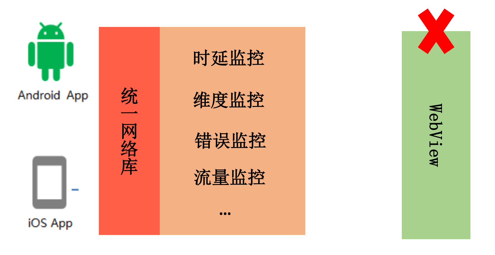
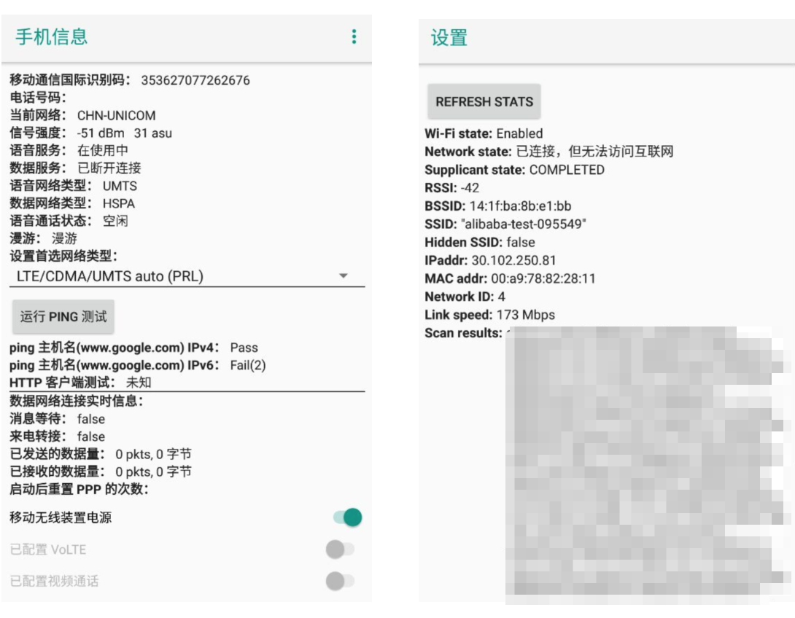
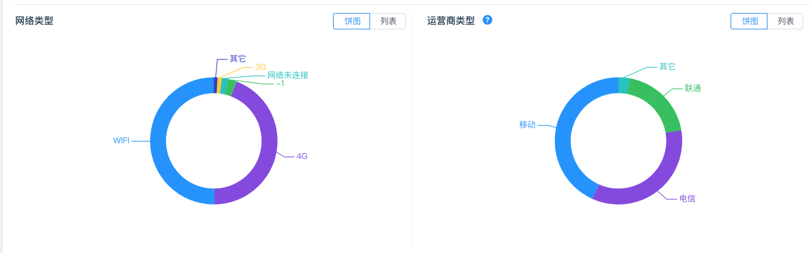
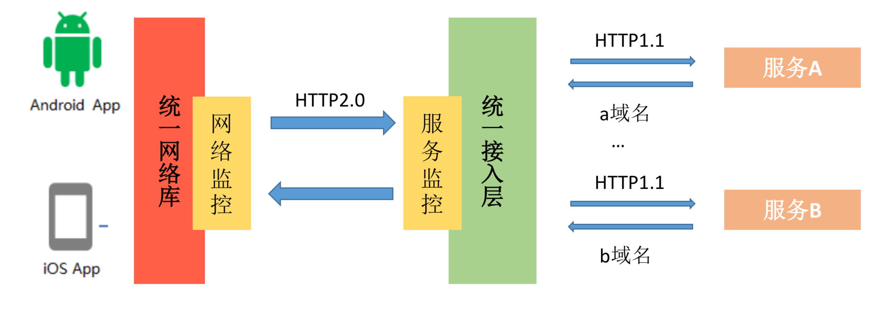
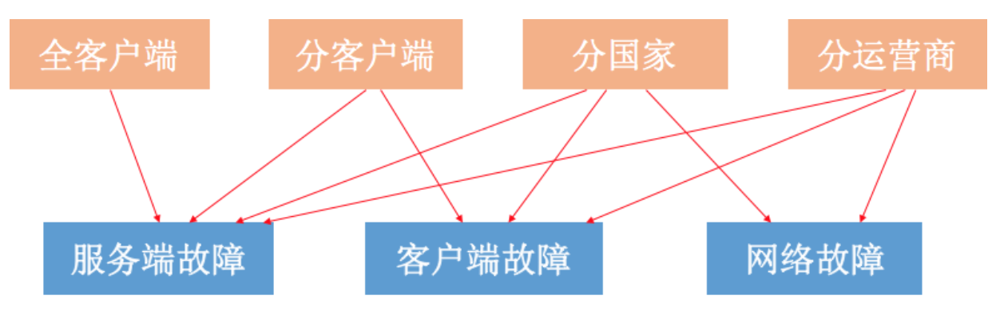

通过上一期的学习，我们对如何打造一个高质量的网络已经有了一个整体的认识。但是这就足够了吗？回想一下，一个网络请求从手机到后台服务器，会涉及基站、光纤、路由器这些硬件设施，也会跟运营商和服务器机房有关。
不论是基站故障、光纤被挖断、运营商挟持，还是我们的机房、CDN 服务商出现故障，都有可能会引起用户网络出现问题。你有没有感觉线上经常突发各种千奇百怪的网络问题，很多公司的运维人员每天过得胆战心惊、疲于奔命。
“善良”的故障过了一段时间之后莫名其妙就好了，“顽固”的故障难以定位也难以解决。这些故障究竟是如何产生的？为什么突然就恢复了？它们影响了多少用户、哪些用户？想要解决这些问题离不开高质量的网络，而高质量的网络又离不开强大的监控。今天我们就一起来看看网络该如何监控吧。
移动端监控
对于移动端来说，我们可能会有各种各样的网络请求。即使使用了 OkHttp 网络库，也可能会有一些开发人员或者第三方组件使用了系统的网络库。那应该如何统一的监控客户端的所有的网络请求呢？
1. 如何监控网络
第一种方法：插桩。
为了兼容性考虑，我首先想到的还是插桩。360 开源的性能监控工具ArgusAPM就是利用 Aspect 切换插桩，实现监控系统和 OkHttp 网络库的请求。
系统网络库的插桩实现可以参考TraceNetTrafficMonitor，主要利用Aspect的切面功能，关于 OkHttp 的拦截可以参考OkHttp3Aspect，它会更加简单一些，因为 OkHttp 本身就有代理机制。
@Pointcut("call(public okhttp3.OkHttpClient build())")public void build() {} @Around("build()")public Object aroundBuild(ProceedingJoinPoint joinPoint) throws Throwable { Object target = joinPoint.getTarget(); if (target instanceof OkHttpClient.Builder && Client.isTaskRunning(ApmTask.TASK_NET)) { OkHttpClient.Builder builder = (OkHttpClient.Builder) target; builder.addInterceptor(new NetWorkInterceptor()); } return joinPoint.proceed();}插桩的方法看起来很好，但是并不全面。如果使用的不是系统和 OkHttp 网络库，又或者使用了 Native 代码的网络请求，都无法监控到。
第二种方法：Native Hook。
跟 I/O 监控一样，这个时候我们想到了强大的 Native Hook。网络相关的我们一般会 Hook 下面几个方法 ：
-
连接相关：connect。
-
发送数据相关：send 和 sendto。
-
接收数据相关：recv 和 recvfrom。
Android 在不同版本 Socket 的逻辑会有那么一些差异，以 Android 7.0 为例，Socket 建连的堆栈如下：
java.net.PlainSocketImpl.socketConnect(Native Method)java.net.AbstractPlainSocketImpl.doConnectjava.net.AbstractPlainSocketImpl.connectToAddressjava.net.AbstractPlainSocketImpl.connectjava.net.SocksSocketImpl.connectjava.net.Socket.connectcom.android.okhttp.internal.Platform.connectSocketcom.android.okhttp.Connection.connectSocketcom.android.okhttp.Connection.connect“socketConnect”方法对应的 Native 方法定义在PlainSocketImpl.c，查看makefile可以知道它们会编译在 libopenjdk.so 中。不过在 Android 8.0，整个调用流程又完全改变了。为了兼容性考虑，我们直接 PLT Hook 内存的所有 so，但是需要排除掉 Socket 函数本身所在的 libc.so。
hook_plt_method_all_lib("libc.so", "connect", (hook_func) &create_hook);hook_plt_method_all_lib("libc.so, "send", (hook_func) &send_hook);hook_plt_method_all_lib("libc.so", "recvfrom", (hook_func) &recvfrom_hook);...这种做法不好的地方在于会把系统的 Local Socket 也同时接管了，需要在代码中增加过滤条件。在今天的 Sample 中，我给你提供了一套简单的实现。其实无论是哪一种 Hook，如果熟练掌握之后你会发现它并不困难。我们需要耐心地寻找，梳理清楚整个调用流程。
第三种方法：统一网络库。
尽管拿到了所有的网络调用，想想会有哪些使用场景呢？模拟网络数据、统计应用流量，或者是单独代理 WebView 的网络请求。

一般来说，我们不会非常关心第三方的网络请求情况，而对于我们应用自身的网络请求，最好的监控方法还是统一网络库。不过我们可以通过插桩和 Hook 这两个方法，监控应用中有哪些地方使用了其他的网络库，而不是默认的统一网络库。
在上一期内容中，我说过“网络质量监控”应该是客户端网络库中一个非常重要的模块，它也会跟大网络平台的接入服务共同协作。通过统一网络库的方式，的确无法监控到第三方的网络请求。不过我们可以通过其他方式拿到应用的整体流量使用情况，下面我们一起来看看。
2. 如何监控流量
应用流量监控的方法非常简单，一般通过 TrafficStats 类。TrafficState 是 Android API 8 加入的接口，用于获取整个手机或者某个 UID 从开机算起的网络流量。至于如何使用，你可以参考 Facebook 一个历史比较久远的开源库network-connection-class。
getMobileRxBytes() // 从开机开始 Mobile 网络接收的字节总数，不包括 WifigetTotalRxBytes() // 从开机开始所有网络接收的字节总数，包括 WifigetMobileTxBytes() // 从开机开始 Mobile 网络发送的字节总数，不包括 WifigetTotalTxBytes() // 从开机开始所有网络发送的字节总数，包括 Wifi它的实现原理其实也非常简单，就是利用 Linux 内核的统计接口。具体来说，是下面两个 proc 接口。
// stats 接口提供各个 uid 在各个网络接口（wlan0, ppp0 等）的流量信息/proc/net/xt_qtaguid/stats// iface_stat_fmt 接口提供各个接口的汇总流量信息proc/net/xt_qtaguid/iface_stat_fmtTrafficStats 的工作原理是读取 proc，并将目标 UID 下面所有网络接口的流量相加。但如果我们不使用 TrafficStats 接口，而是自己解析 proc 文件呢？那我们可以得到不同网络接口下的流量，从而计算出 WiFi、2G/3G/4G、VPN、热点共享、WiFi P2P 等不同网络状态下的流量。
不过非常遗憾的是，Android 7.0 之后系统已经不让我们直接去读取 stats 文件，防止开发者可以拿到其他应用的流量信息，因此只能通过 TrafficStats 拿到自己应用的流量信息。
除了流量信息，通过 /proc/net 我们还可以拿到大量网络相关的信息，例如网络信号强度、电平强度等。Android 手机跟 iPhone 都有一个网络测试模式，感兴趣的同学可以尝试一下。
-
iPhone：打开拨号界面，输入“*3001#12345#*”，然后按拨号键。
-
Android 手机：打开拨号界面，输入“*#*#4636#*#*”，然后按拨号键（可进入工程测试模式，部分版本可能不支持）。

为什么系统可以判断此时的 WiFi“已连接，但无法访问互联网”？回想一下专栏第 15 期我给你留的课后作业：
iPhone 的无线网络助理、小米和一加的自适应 WLAN 它们在检测 WiFi 不稳定时会自动切换到移动网络。那请你思考一下，它们是如何实现侦测，如何区分是应用后台服务器出问题还是 WiFi 本身有问题呢？
我看了一下同学们的回复，大部分同学认为需要访问一个公网 IP 的方式。其实对于手机厂商来说根据不需要，它在底层可以拿到的信息有很多。
-
网卡驱动层信息。如射频参数，可以用来判断 WiFi 的信号强度；网卡数据包队列长度，可以用来判断网络是否拥塞。
-
协议栈信息。主要是获取数据包发送、接收、时延和丢包等信息。
如果一个 WiFi 发送过数据包，但是没有收到任何的 ACK 回包，这个时候就可以初步判断当前的 WiFi 是有问题的。这样系统可以知道当前 WiFi 大概率是有问题的，它并不关心是不是因为我们后台服务器出问题导致的。
大网络平台监控
前面我讲了一些应用网络请求和流量的监控方法，但是还没真正回答应该如何去打造一套强大的网络监控体系。跟网络优化一样，网络监控不是客户端可以单独完成的，它也是整个大网络平台的一个重要组成部分。
不过首先我们需要在客观上承认这件事情做起来并不容易，因为网络问题会存在下面这些特点：
-
实时性。部分网络问题过时不候，可能很快就丢失现场。
-
复杂性。可能跟国家、地区、运营商、版本、系统、机型、CDN 都有关，不仅维度多，数据量也巨大。
-
链路长。整个请求链条非常长，客户端故障、网链障络、服务故障都有可能。
因此所谓的网络监控，并不能保证可以明确找到故障的原因。而我们目标是希望快速发现问题，尽可能拿到更多的辅助信息，协助我们更容易地排查问题。
下面我分别从客户端与接入层的角度出发，一起来看看哪些信息可以帮助我们更好地发现问题和解决问题。
1. 客户端监控
客户端的监控使用统网络库的方式，你可以想想我们需要关心哪些内容：
-
时延。一般我们比较关心每次请求的 DNS 时间、建连时间、首包时间、总时间等，会有类似 1 秒快开率、2 秒快开率这些指标。
-
维度。网络类型、国家、省份、城市、运营商、系统、客户端版本、机型、请求域名等，这些维度主要用于分析问题。
-
错误。DNS 失败、连接失败、超时、返回错误码等，会有 DNS 失败率、连接失败率、网络访问的失败率这些指标。
通过这些数据，我们也可以汇总出应用的网络访问大图。例如在国内无论我们去到哪里都会问有没有 WiFi，WiFi 的占比会超过 50%。这其实远远比海外高，在印度 WiFi 的占比仅仅只有 15% 左右。

同样的我们分版本、分国家、分运营商、分域名等各种各样的维度，来监控我们的时延和错误这些访问指标。
由于维度太多，每个维度的取值范围也很广，如果是实时计算整个数据量会非常非常大。对于客户端的上报数据，微信可以做到分钟级别的监控报警。不过为了运算简单我们会抛弃 UV，只计算每一分钟部分维度的 PV。
2. 接入层监控
客户端监控的数据会比接入层更加丰富，因为有可能会出现部分数据还没到达接入层就已经被打回，例如运营商劫持的情况。

但是接入层的数据监控还是非常有必要的，主要的原因是：
-
实时性。客户端如果使用秒级的实时上报，对用户性能影响会比较大。服务端就不会存在这个问题，它很容易可以做到秒级的监控。
-
可靠性。如果出现某些网络问题，客户端的数据上报通道可能也会受到影响，客户端的数据不完全可靠。
那接入层应该关心哪些数据呢？一般来说，我们会比较关心服务的入口和出口流量、服务端的处理时延、错误率等。
3. 监控报警
无论是客户端还是接入层的监控，它们都是分层的。
-
实时监控。秒级或者分钟级别的实时监控的信息会相比少一些，例如只有访问量（PV）、错误率，没有去拆分几百个上千个维度，也没有独立访问用户数（UV），实时监控的目的是最快速度发现问题。
-
离线监控。小时或者天级别的监控我们可以拓展出全部的维度来做监控，它的目的是在监控的同时，可以更好地圈出问题的范围。
下面是一个简单根据客户端、国家以及运营商维度分析的示例。当然更多的时候是某一个服务出现问题，这个时候通过分域名或者错误码就可以很容易的找到原因。

那在监控的同时如何实现准确的自动化报警呢？这同样也是业界的一个难题，它的难度在于如果规则过于苛刻，可能会出现漏报；如果过于宽松，可能会出现太多的误报。
业界一般存在两种报警的算法，一套是基于规则，例如失败率与历史数据相比暴涨、流量暴跌等。另一种是基于时间序列算法或者神经网络的智能化报警，使用者不需要录入任何规则，只需有足够长的历史数据，就可以实现自动报警。智能化报警目前准确性也存在一些问题，在智能化基础上面添加少量规则可能会是更好的选择。
如果我们收到一个线上的网络报警，通过接入层和客户端的监控报表，也会有了一个大致的判断。那怎么样才能确定问题的最终原因？我们是否可以拿到用户完整的网络日志？甚至远程地诊断用户的网络情况？关于“网络日志和远程诊断，如何快速定位网络问题”，我会把它单独成篇放在专栏第二模块里，再来讲讲这个话题。
总结
监控、监控又是监控，很多性能优化工作其实都是“三分靠优化，七分靠监控”。
为什么监控这么重要呢？对于大公司来说，每一个项目参与人员可能成百上千人。并且大公司要的不是今天或者这个版本可以做好一些事情，而是希望保证每天每个版本都能持续保持应用的高质量。另一方面有了完善的分析和监控的平台，我们可以把复杂的事情简单化，把一些看起来“高不可攀”的优化工作，变成人人都可以做。
最后多谈两句我的感受，我们在工作的时候，希望你可以看得更远，从更高的角度去思考问题。多想想如果我能做好这件事情，怎么保证其他人不会犯错，或者让所有人都可以做得更好。
课后作业
对于网络问题，你尝试过哪些监控方法？有没有令你印象深刻的网络故障，最终又是通过什么方式解决的呢？欢迎留言跟我和其他同学一起讨论。
今天我们练习的Sample是通过 PLT Hook，代理 Socket 相关的几个重要函数，这次还增加了一个一次性 Hook 所有已经加载 Library 的方法。
int hook_plt_method_all_lib(const char* exclueLibname, const char* name, hook_func hook) { if (refresh_shared_libs()) { // Could not properly refresh the cache of shared library data return -1; } int failures = 0; for (auto const& lib : allSharedLibs()) { if (strcmp(lib.first.c_str(), exclueLibname) != 0) { failures += hook_plt_method(lib.first.c_str(), name, hook); } } return failures;}希望你通过这几次课后练习，可以学会将 Hook 技术应用到实践当中。
COMMUNITY NOTES
读者评论
在okhttp中统计建立连接耗时，SSL握手耗时，然后为了确定统计正确，用了电脑上wireshark进行子相应过程的耗时比较。发现，okhttp中的方法耗时比wireshark统计的耗时大很多，比如okhttp中对SSL握手方法socket.startHandSharke()的耗时可能180ms，但是wireshak显示这一步只有40-50ms。有人做过类似统计吗？为什么跟电脑抓包对比耗时统计数据会差这么多？难道startHandSharke()不只做是SSL的握手的事，还有别的事在耗时？
公司内网服务用的购买的 https 在使用这些服务时经常会出现 timeout，但是正式环境不会，这种如何来监控解决。
由于最近这几年都是在做跟网络相关的工作，基本上遇到的问题绍文老师都已经提到了。比如DNS劫持，超时，服务器宕机、假网、白名单等网络问题。其中让我印象最为深刻的是公司内部的wifi上网认证，没有通过认证是无法访问内网和外网。 最后解决这类问题时，我们会主动用浏览器打开认证页面让用户登录。
我司的app在2018年有一阵子有用户持续反馈网络卡顿。终于花了点力气完善了监控。因为主要是反馈的socket那块的业务，所以对socket请求收发流程分为7个阶段进行了监控，分别是：请求调用，请求入队列，请求开始发送，请求发送成功，收到响应，响应入队列，响应数据解析分发。当然除了客户端监控数据外，还和服务器数据整合了，能更加准确看到卡顿的占比。客户端用的是生产者消费者加阻塞队列的模式。遇到了Tcp队头阻塞的问题。一旦进个电梯或者地下室，出现了弱网情况，请求开始发送和请求发送成功的时间差就会急剧放大，而这两个时间段之间仅仅只有一行out.write(data)。前面一个没发完，队列里的都被堵住了。后来，准备尝试Nio的方式，把请求发送的时间给压下去，但后来想想数据好看了，并不解决实际问题，发不出去还是发不出去，于是作罢。也想问问各位大佬，有没有好的建议？
老哥是不是参加了Bugly项目
创业公司整天忙于做业务，对于监控这些做的还是不够，所以目前App并没有监控方面的东西，但是跟着作者的步骤还是学到了很多
干货多多，在这里想了解下大家都有用哪些网络库？
🛋